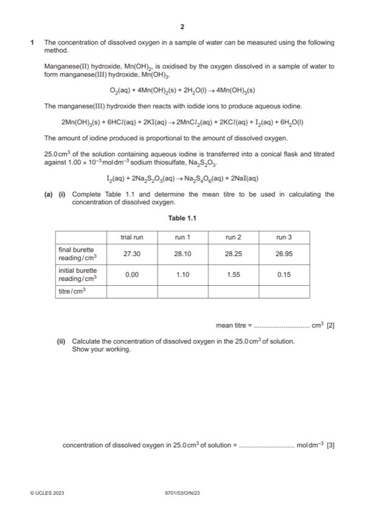

Question 1

Original paper page 2
Part 1(a)(i) — solution
- [M1] 27.30, 27.00, 26.70, 26.80 2
- [M2] correct averaging of two (or more) titres within 0.10 cm3 of each other
Mark points
- [M1] 27.30, 27.00, 26.70, 26.80 2
- [M2] correct averaging of two (or more) titres within 0.10 cm3 of each other
Part 1(a)(ii) — solution
- [M1] n(Na2S2O3(aq)) = (a(i) / 1000) 0.001 3
- [M2] n(O2(aq)) = M1 / 4
- [M3] concentration of oxygen = M2 1000 / 25 = M2 x 40
Mark points
- [M1] n(Na2S2O3(aq)) = (a(i) / 1000) 0.001 3
- [M2] n(O2(aq)) = M1 / 4
- [M3] concentration of oxygen = M2 1000 / 25 = M2 x 40
Part 1(b) — solution
(25.0 cm3) volumetric pipette 1
Mark points
- Include the ideas shown in the solution above.
Part 1(c) — solution
to avoid any oxygen from (trapped) air (in the flask) reacting with / oxidising Mn(OH)2 1
Mark points
- Include the ideas shown in the solution above.
Part 1(d)(i) — solution
- [M1] All points plotted correctly. 2
- [M2] smooth curve LOBF drawn
Mark points
- [M1] All points plotted correctly. 2
- [M2] smooth curve LOBF drawn
Part 1(d)(ii) — solution
Correct value read from candidate’s graph. 1
Value given to at least 3SF.
(Expected value – 2.57 10-4 moldm-3)
2023 Page 8 of 11
9701/53 Cambridge International AS & A Level – Mark Scheme October/November 2023
Mark points
- Include the ideas shown in the solution above.
Part 1(d)(iii) — solution
- [M1] Point most anomalous to the plotted line of best fit circled. 2
Mark points
- [M1] Point most anomalous to the plotted line of best fit circled. 2
Part 1 — solution
Some C6H5N2Cl had decomposed / reacted with water (before reacting with phenylamine) OR temperature rose above
Mark points
- Include the ideas shown in the solution above.